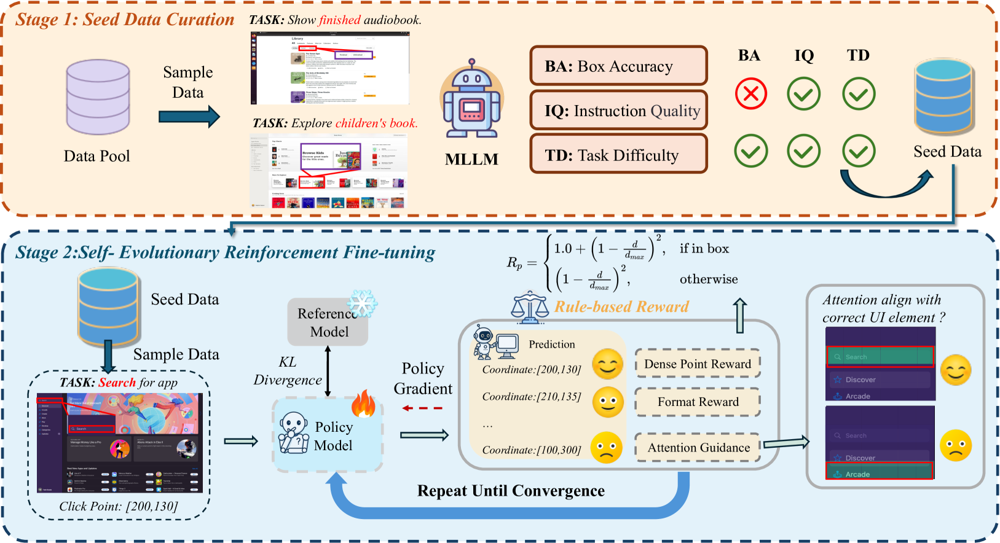

TL;DR
三部分：高质量 seed data curation；dense policy gradient，按预测精度给连续反馈；self-evolutionary RFT，用注意力图迭代提炼模型的伪监督和定位能力。 只用 3K 样本，7B 模型在三个 grounding benchmark 达同尺寸 SOTA；ScreenSpot-Pro 47.3%，比 UI-TARS-72B 高 24.2%。这说明 attention map 可作为中间监督信号。
⚠️ 数值主要按论文/技术报告/综述自报口径整理，未声明为第三方独立复现。
0. 论文定位卡
| 路线 | Grounding |
|---|---|
| 环境 | Cross-platform GUI |
| 动作空间 | 坐标、目标框、click(x,y) 或局部裁剪定位 |
| 奖励信号 | 坐标命中、距离、IoU、coverage 或语义匹配 |
| 优化方式 | SFT warmup + RL/RFT 或系统级闭环优化 |
| 读表口径 | ⚠️ 数值主要按论文/技术报告/综述自报口径整理，未声明为第三方独立复现。 |
先看这张卡可以避免误读：GUI Agent RL 论文经常把“模型能力”“环境系统”“奖励设计”“数据生成”混在一起讨论。这里把它拆成环境、动作空间、奖励信号和优化方式四个轴，方便判断论文到底贡献在哪里。
1. 框架图与读图指南

读图顺序
- 先看输入端：屏幕截图、目标文本或自然语言指令，有时还包含裁剪区域和候选元素。
- 再看中间模块：verifier 根据目标元素框、距离、高斯覆盖或语义匹配计算连续奖励。
- 接着看反馈回路：坐标命中、IoU、距离衰减、高斯覆盖度或语义定位是否正确，这一项如何回到策略、价值函数、reward model 或数据筛选器。
- 最后看输出端：输出坐标、边界框或带坐标的 GUI action，例如 click(x,y)；这决定论文结果到底是在单步 grounding、完整 trajectory 还是系统吞吐上成立。
读这类图不要只看模块名，要沿着 observation → action → reward/update 的方向追踪数据流。只要能指出 reward 或 verifier 是在哪里产生的、又如何回到策略更新，就基本抓住了论文的核心。
2. 要解决的问题
高分辨率、专业软件界面中，GUI grounding 很难靠大量 SFT 泛化；需要更数据高效的 RL 方式。
换成 GUI agent 的语言，这个问题通常落在三件事上：界面状态部分可观测、正确反馈稀疏且延迟、静态示范无法覆盖真实软件变化。论文的价值就在于把这些问题中的一个或多个转成可训练的闭环信号。
如果只用 SFT 或行为克隆，模型学到的是“在数据集截图上下一步该怎么点”；而 GUI Agent 真正部署时会遇到状态漂移、异步加载、误点回退、任务参数变化和界面版本变化。本文所属路线试图回答的是：如何让模型从环境反馈、可验证标签或合成轨迹里继续改进，而不是停留在一次性模仿。
3. 任务形式：输入、动作、奖励
| 观察 | 屏幕截图、目标文本或自然语言指令，有时还包含裁剪区域和候选元素。 |
|---|---|
| 动作 | 输出坐标、边界框或带坐标的 GUI action，例如 click(x,y)。 |
| 奖励 | 坐标命中、IoU、距离衰减、高斯覆盖度或语义定位是否正确。 |
这个表是读 GUI Agent RL 论文最重要的入口：只要弄清楚模型看到了什么、能做什么、奖励从哪里来，就能判断它是算法贡献、环境贡献、奖励贡献还是系统贡献。
4. 训练闭环怎么跑
- 输入截图和目标描述，模型产生一个或多个坐标/框/局部候选。
- verifier 根据目标元素框、距离、高斯覆盖或语义匹配计算连续奖励。
- 策略优化放大命中目标、语义正确、成本较低的候选，压低乱点、冗长推理和重复探索。
- 推理时可结合裁剪、重采样、视觉工具或候选 rerank，提高小控件和密集界面定位。
这条闭环是理解论文的主线。无论它叫 GRPO、DPO、AEPO、MCTS、world model 还是 semi-online，最终都要把“模型输出的动作”转换成“可执行状态变化”，再把状态变化转换成“可训练信号”。
5. 方法与架构怎么跑
- SE-GUI 不靠巨量 SFT 数据，而是先筛一小批高质量 GUI grounding seed data。模型在这些样本上训练后，会产生自己的预测、注意力图和错误模式。
- 普通 hit/miss reward 太稀疏。SE-GUI 把坐标偏差转成 dense policy gradient，让模型知道预测点离目标有多远、该往哪个方向修正。
- attention map 不是最终答案，但能反映模型看哪里。SE-GUI 用它辅助筛选和修正伪监督，让训练不只盯最终坐标，而是改善中间视觉对齐。
5.1 从 seed data 开始自进化
SE-GUI 不靠巨量 SFT 数据，而是先筛一小批高质量 GUI grounding seed data。模型在这些样本上训练后，会产生自己的预测、注意力图和错误模式。
自进化的关键是把模型当前状态也变成数据筛选器：哪些样本对模型有帮助、哪些注意力区域和目标元素对齐、哪些预测可作为下一轮训练信号。
5.2 Dense policy gradient 给坐标误差连续反馈
普通 hit/miss reward 太稀疏。SE-GUI 把坐标偏差转成 dense policy gradient，让模型知道预测点离目标有多远、该往哪个方向修正。
这在高分辨率专业软件里尤其重要，因为很多按钮和图标很小，纯二值奖励会导致训练长期没有有效梯度。
5.3 为什么 attention map 有用
attention map 不是最终答案，但能反映模型看哪里。SE-GUI 用它辅助筛选和修正伪监督，让训练不只盯最终坐标，而是改善中间视觉对齐。
因此它属于 grounding 自迭代路线：用少量人工 seed 撬动模型自身产生更多、更贴近当前错误的训练信号。
因此，这篇论文不是简单地“让大模型点屏幕”，而是围绕 observation-action-reward 契约重写训练闭环：先让动作可执行，再让反馈可验证，最后让策略能从成功和失败中更新。
5.4 关键中间变量
读方法时要特别盯住中间变量：轨迹是按 step 存、按 episode 存，还是按候选动作组存？奖励是只在终局出现，还是每一步都有 progress？模型更新时用的是整条轨迹的相对优势、单步坐标误差、偏好对，还是 value/Q head？这些细节决定了论文能否处理长任务和稀疏奖励。
5.5 为什么这种设计能解决原问题
核心逻辑是把原本不可微、不可直接监督的 GUI 成功条件拆成更接近训练信号的形式：要么用规则/verifier 把成功自动判出来，要么用 reward model 学过程进展，要么用世界模型/搜索生成更多成功轨迹，要么用层级结构把几十步任务拆成几个短子目标。
6. 训练、奖励与数据流
- Grounding 训练必须把视觉空间误差转成可优化 reward；常见做法包括距离奖励、IoU、高斯奖励和裁剪重采样。
读实验时要特别注意 reward 口径：有的论文评估单步坐标，有的评估整条任务成功，有的只报告系统吞吐或数据合成质量。不同口径不能直接相加或横向混算。
7. 关键设计与创新点
- 把视觉定位从硬命中扩展到连续或主动感知反馈，使坐标错误能产生可学习梯度。
这些创新点的共同目标，是把 GUI 交互从一次性 prompt 调用变成可迭代优化的训练系统。
8. 实验怎么读
只用 3K 样本，7B 模型在三个 grounding benchmark 达同尺寸 SOTA；ScreenSpot-Pro 47.3%，比 UI-TARS-72B 高 24.2%。这说明 attention map 可作为中间监督信号。
| 项目 | 口径 | 指标 | 结论/注意事项 |
|---|---|---|---|
| 主 benchmark | ScreenSpot / ScreenSpot-Pro | 任务成功率 / grounding accuracy / 系统吞吐 | 只用 3K 样本，7B 模型在三个 grounding benchmark 达同尺寸 SOTA；ScreenSpot-Pro 47.3%，比 UI-TARS-72B 高 24.2%。这说明 attention map 可作为中间监督信号。 |
| 对照基线 | SFT、BC、prompting、闭源 VLM 或同尺寸开源模型 | 相同任务口径下比较 | 不同论文的环境和任务集合不同，不能把数值直接跨表相加。 |
| 可信度 | 作者自评或综述转述 | ⚠️ / 待核 | ⚠️ 数值主要按论文/技术报告/综述自报口径整理，未声明为第三方独立复现。 |
这类实验通常需要同时看三组数字：第一是任务成功率或 grounding accuracy；第二是与 SFT、BC、prompting、GPT-4V/闭源模型或开源基线的对比；第三是环境成本，例如 rollout 速度、样本数量、标注成本和并行规模。
尤其要避免一个常见误读：ScreenSpot/grounding accuracy、WebArena success rate、AndroidWorld task success、OSWorld desktop success、world-model rollout speed 不是同一个指标。本文页面保留原论文或综述的原始口径，不把它们强行换算。
9. 常见误读
- 不要把 grounding benchmark 的坐标准确率直接等同于完整 GUI 任务成功率；它只说明第一步或单步定位能力。
- 读 SE-GUI: Enhancing Visual Grounding via Self-Evolutionary RL 时，应先确认它报告的是作者自评、技术报告结果还是第三方 benchmark 结果。
10. 复现或落地时要准备什么
- 先固定 action schema，并写一个能把模型输出解析成真实 GUI 操作的 adapter。
- 准备 verifier：至少要能判断终局成功；如果是 grounding 论文，还要能计算坐标/区域奖励。
- Grounding 实验要保留原始分辨率、元素框和坐标归一化规则，否则不同 benchmark 不可比。
如果只能先复现一小部分，建议优先复现 action schema、verifier 和一组可重置任务；没有这三件事，后续 RL 指标很难可信。
11. 局限与读法
- 单步 grounding 分数高不等于多轮任务成功；坐标准但点错流程仍会失败。
- 连续奖励或裁剪策略可能对特定 benchmark 有利，跨分辨率、跨应用仍需验证。
它位于“把视觉定位做准”的支线：没有可靠 grounding，多轮策略再强也会在第一步点击或输入上失败。
和参考站的可信度规则一致，本页把作者自评、技术报告自报和综述转述都按 ⚠️ 处理；只有基准维护方统一评测或第三方复现才适合当作更强证据。
来源
本页依据 GUI Agent RL 综述、论文摘要/公开页面和站内总报告整理；数值优先保留论文自报口径，未做第三方复现实验。参考站体例来自具身智能学习站的论文细读页面，例如 RT-2 与 SimpleVLA-RL 细读。